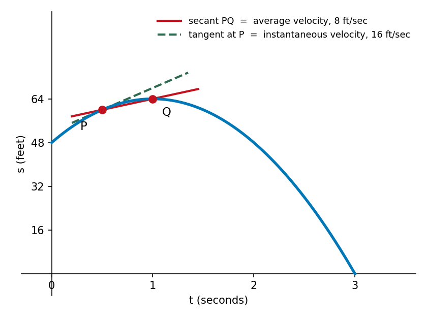

Section 2.1: The Tangent and Velocity Problems
MTH 207 — Calculus I | Limits and Derivatives
Two Questions
A geometry question.
What is the slope of the line that just touches a curve at one point?
A physics question.
A speedometer reads \(58\) mph right now. What does “velocity at an instant” even mean?
What Is a Tangent Line?
“Tangent” comes from the Latin tangens — touching. A tangent should head in the same direction as the curve where it touches.
Euclid's definition works for a circle: a line meeting the curve exactly once.
For other curves it breaks down:
- line \(\ell\) meets the curve once but is clearly not tangent
- line \(t\) does look tangent — and meets the curve twice

The Tangent Problem
Example 1
Find the slope of the tangent line to \(y = x^2\) at the point \(P(3, 9)\).
The difficulty. Slope needs two points. We have only \(P\).
The workaround. Pick a second point \(Q(x, x^2)\) on the curve and compute the slope of the secant line \(PQ\) — from the Latin secans, “cutting”:
\[ m_{PQ} = \frac{x^2 - 9}{x - 3} \]
Then slide \(Q\) toward \(P\) and watch what the secant slopes do.
Sliding \(Q\) Toward \(P\)
From the right:
| \(x\) | \(m_{PQ}\) |
|---|---|
| \(6\) | \(9\) |
| \(4\) | \(7\) |
| \(3.5\) | \(6.5\) |
| \(3.1\) | \(6.1\) |
| \(3.01\) | \(6.01\) |
From the left:
| \(x\) | \(m_{PQ}\) |
|---|---|
| \(0\) | \(3\) |
| \(2\) | \(5\) |
| \(2.5\) | \(5.5\) |
| \(2.9\) | \(5.9\) |
| \(2.99\) | \(5.99\) |
The Secants Rotate into the Tangent
As \(Q\) slides toward \(P\), the secant lines pivot about \(P\) and settle onto one line — the tangent.
We say the slope of the tangent is the limit of the slopes of the secants:
\[ m = \lim_{Q \to P} m_{PQ} = \lim_{x \to 3} \frac{x^2 - 9}{x - 3} \]

Evaluating the Limit
\[ m = \lim_{x \to 3} \frac{x^2 - 9}{x - 3} = \lim_{x \to 3} \frac{(x-3)(x+3)}{x - 3} = \lim_{x \to 3} (x+3) = 6 \]
So the tangent line at \(P(3,9)\) has slope \(6\), and its equation is
\[ y - 9 = 6(x - 3) \text{or} y = 6x - 9 \]
The Velocity Problem
A ball is thrown straight up; its height in feet after \(t\) seconds is
\[ s(t) = 64 - 16(t-1)^2, 0 \le t \le 3. \]
The difficulty. Velocity is (change in position)/(time elapsed) — but an instant is not an interval. There is nothing to divide by.
The same workaround. Average over a short interval and then shrink it.

Average Velocity over Shrinking Intervals
Example 2
Estimate the ball's velocity at the instant \(t = 0.5\).
Compute the average velocity on \([0.5, 1]\) first.
\[ AV_{[0.5, 1]} = \frac{s(1) - s(0.5)}{1 - 0.5} = \frac{64 - 60}{0.5} = 8\text{ ft/sec} \]
Shrinking the interval: \([0.5, 0.75] \to 12\), \([0.5, 0.6] \to 14.4\), \([0.5, 0.51] \to 15.84\).
The averages close in on \(\mathbf{16}\) ft/sec — the instantaneous velocity at \(t = 0.5\).
They Are the Same Problem
On the graph of \(s(t)\), take \(P(a, s(a))\) and \(Q(a+h, s(a+h))\). The slope of the secant \(PQ\) is
\[ m_{PQ} = \frac{s(a+h) - s(a)}{h} \]
which is exactly the average velocity on \([a,\,a+h]\).
So shrinking the interval is sliding \(Q\) toward \(P\).

What We Still Owe
Both problems ended in the same place: a quantity we could only approach, never evaluate directly.
Tangent
Slope \(= \lim_{x \to 3} \dfrac{x^2-9}{x-3}\) — substituting gives \(0/0\).
Velocity
Speed \(= \lim_{h \to 0} \dfrac{s(a+h)-s(a)}{h}\) — substituting gives \(0/0\).